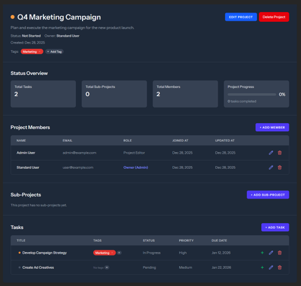
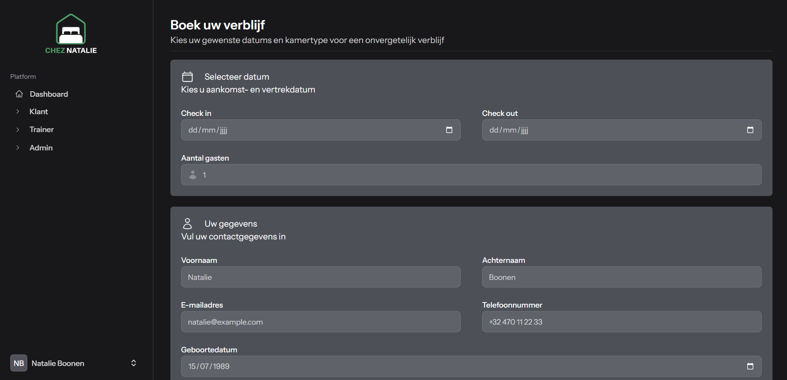
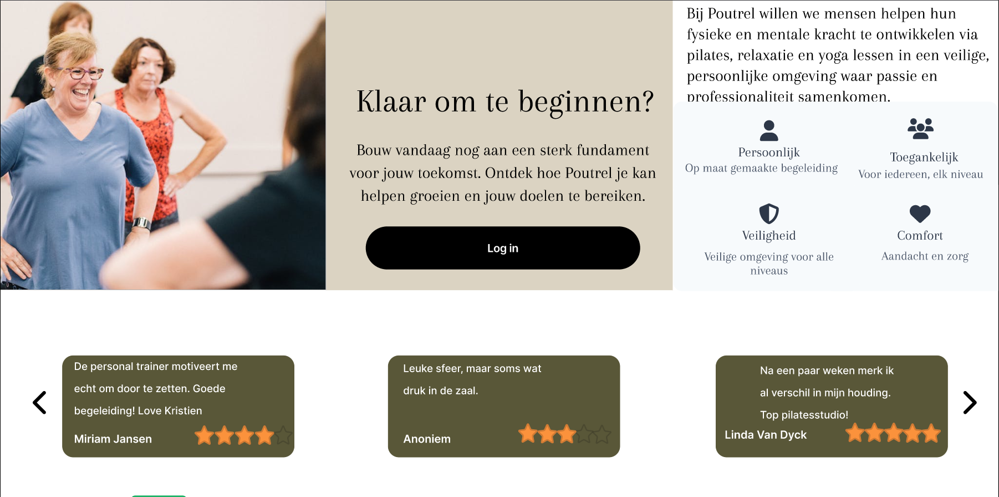
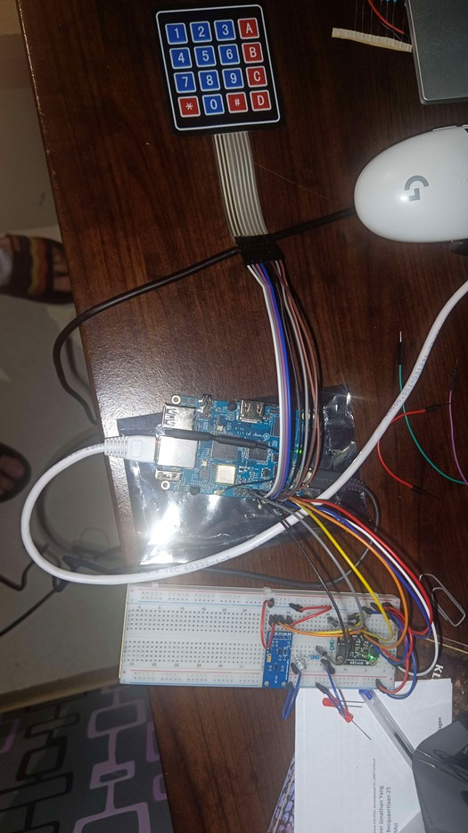

Projecten
Een diepgaand overzicht van mijn werk tijdens de opleiding Toegepaste Informatica

TaskFlow
Wat ik leerde
- Ontwikkelen van een volledige webapplicatie met Laravel (MVC, Eloquent ORM, migraties).
- Realtime interactiviteit zonder complexe JavaScript frameworks dankzij Laravel Livewire (wire:model, wire:click, livewire componenten).
- Werken met FluxUI – een componentenbibliotheek voor Livewire – voor een consistente en snelle UI-ontwikkeling.
- Implementeren van Rolgebaseerd Toegangsbeheer (RBAC) met Laravel Gates en Policies, inclusief propagatie van rechten over projecthiërarchieën.
- Bouwen van een hiërarchische projectstructuur met recursieve relaties in Eloquent en efficiënte database queries.
Mijn bijdrage
Ik was volledig verantwoordelijk voor de backend (Laravel) en frontend (Livewire + FluxUI). Ik ontwierp de database schema's, implementeerde de RBAC-logica met Policies, de hiërarchische queries, en bouwde de Livewire componenten voor taakbeheer, ledenbeheer enzovoort.

Chez Natalie
Wat ik leerde
- Correct implementeren van CRUD-functionaliteit met databasequeries in een Laravel-project met SQLite.
- Werken met FluxUI – een componentenbibliotheek voor Livewire – voor een consistente en snelle UI-ontwikkeling.
- Omgaan met mergeconflicten in GitHub.
- Navigeren en werken binnen de code van andere teamleden, zodat ik bestaande structuren kon begrijpen en hierop kon voortbouwen.
- Leren werken in een groepsomgeving en binnen een projectteam.
Mijn bijdrage
In het teamproject heb ik gewerkt aan zowel de front-end als de back-end van drie pagina’s: het boeken van een kamer (klant), het bekijken van boekingen (klant) en het beheren van accounts (admin).

Poutrel Movement Studio
Wat ik leerde
- Het gebruik van het programma Figma.
- Leren omgaan met een niet-technische klant.
- Leren werken in een groepsomgeving en binnen een projectteam.
Mijn bijdrage
In dit teamproject is mijn bijdrage niet eenvoudig in één rol te vatten. Ik fungeerde als een “jack of all trades”, waarbij ik op verschillende vlakken ondersteuning bood aan het team. Mijn rol kan het best omschreven worden als assistent en editor.
Ik hielp teamleden door hen te ondersteunen bij hun taken, mee na te denken over ideeën en constructieve feedback te geven. Zo droeg ik bij door verbeterpunten aan te wijzen en alternatieve oplossingen voor te stellen waar nodig.

IoT Essentials – Smart Climate Control
Wat ik leerde
- I2C-communicatie met sensoren (BH1750, BMP280) op een Raspberry Pi (Python, smbus2).
- Publiceren van sensordata naar de cloud via MQTT (ThingSpeak) met behoud van connectiviteit.
- Implementeren van een matrix‑keypad met debouncing en realtime invoer (WiringPi).
- Analoge uitgangen via software PWM voor LED‑helderheidsregeling.
- Aansturen van een verwarmingselement (transistor/relay) via GPIO om de temperatuur te regelen.
- Closed‑loop control: vergelijken van gemeten waarden met doelen en automatisch bijsturen van LED en verwarming.
- Foutafhandeling en reconnectie van de MQTT-client bij netwerkproblemen.
- Documentatie: schakelschema, foto’s van de setup, en een demonstratievideo (max. 2 min.) op YouTube.
Mijn bijdrage
Dit was een individueel project. Ik was volledig verantwoordelijk voor het ontwerp, de hardware‑opbouw (Raspberry Pi, sensoren, keypad, LED, vermogensregeling), de volledige software (Python‑script met MQTT, PWM, keypad‑scanning, closed‑loop logica) en de integratie met ThingSpeak. Ook maakte ik de demonstratievideo en het technische rapport met zelfevaluatie.